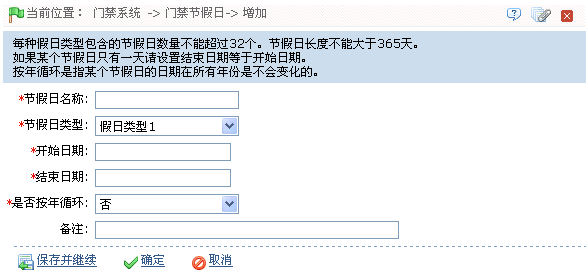

6.2 门禁节假日
节假日的门禁时间可能与平时的门禁时间不同，为了简便操作，系统提供了节假日设置，专门针对节假日设置门禁时间。
门禁节假日管理包括新增门禁节假日和门禁节假日的修改和删除。
1、新增门禁节假日
节假日支持三种假日类型，每种假日类型包含的节假日数量不能超过32个。当用户需要在某些特殊日期进行特殊的门禁权限配置时可以通过门禁节假日进行设置。
（1）、单击【门禁】 【门禁节假日】
【门禁节假日】 【新增】，进入新增门禁节假日页面：
【新增】，进入新增门禁节假日页面：

根据需要设置各参数，具体设置方法如下：
节假日名称：输入节假日名称。
节假日类型：假日类型1、2、3，即当前新增的某项节假日记录，一定包含于三个假日类型中，每个假日类型最多包含32个节假日；
开始、结束日期：开始日期不能大于结束日期，否则系统将提示错误，开始日期的年份不能小于当前年，且节假日日期不能跨年。
是否按年循环：是/否。默认为“否”，按年循环指跨年不需修改的假日，比如元旦为每年的1月1日，可设置为“是”，再如母亲节为每年5月的第2个周日，其日期具有不确定性，可将其此属性设置为“否”；
例如：节假日“元旦”设置日期为2010年1月1日，假日类型1，则在1月1日不会按照当日的“星期五”进行门禁时间控制，而是按照假日类型1的门禁时间段设置的时间控制。
（2）、设置完成后，单击【确定】按钮保存。
2、门禁节假日修改
如需对原有门禁节假日进行修改，请点击该门禁节假日后的【编辑】，进入编辑界面，修改后点击【确定】保存即可。
3、门禁节假日的删除
-
 方法一：在门禁节假日列表中，点击“相关操作”下的【删除】按钮，进入删除确认页面，单击【确定】则删除该节假日。
方法一：在门禁节假日列表中，点击“相关操作”下的【删除】按钮，进入删除确认页面，单击【确定】则删除该节假日。 -
方法二：勾选门禁节假日列表中一个或多个门禁节假日前的复选框，点击列表上方的【删除】按钮，进入删除确认页面，单击【确定】则删除选中的门禁节假日。
 注意：正在使用中的门禁节假日不能被删除。
注意：正在使用中的门禁节假日不能被删除。